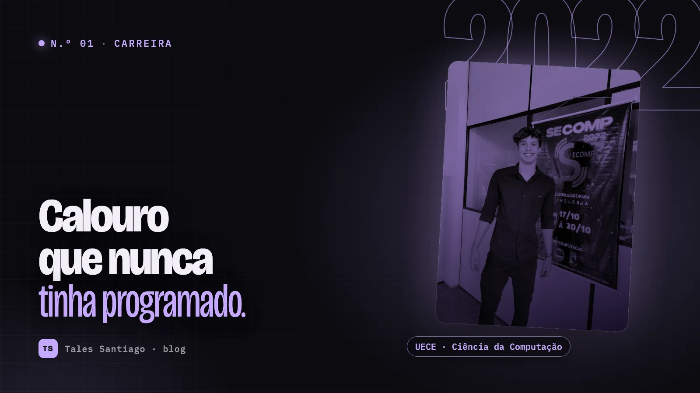
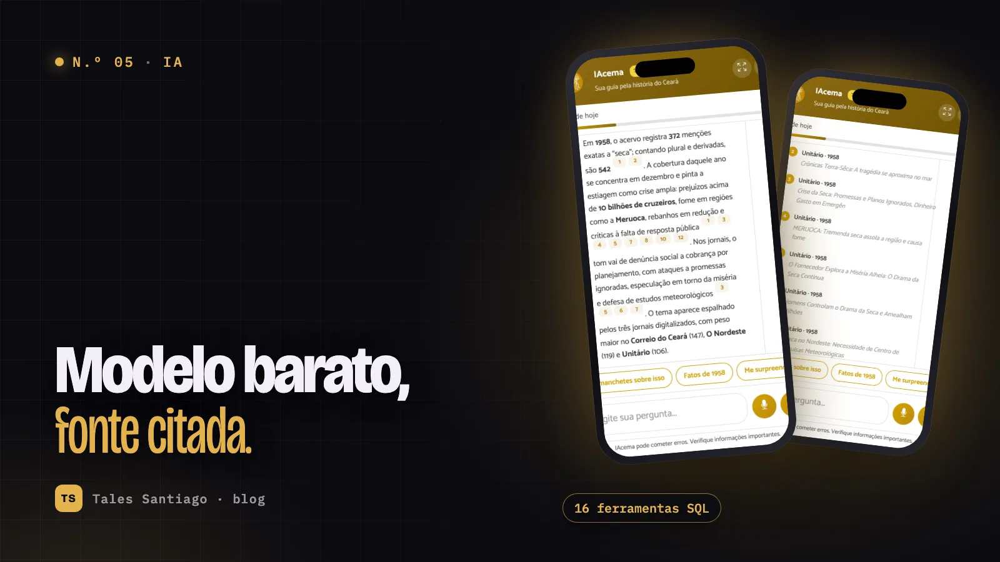
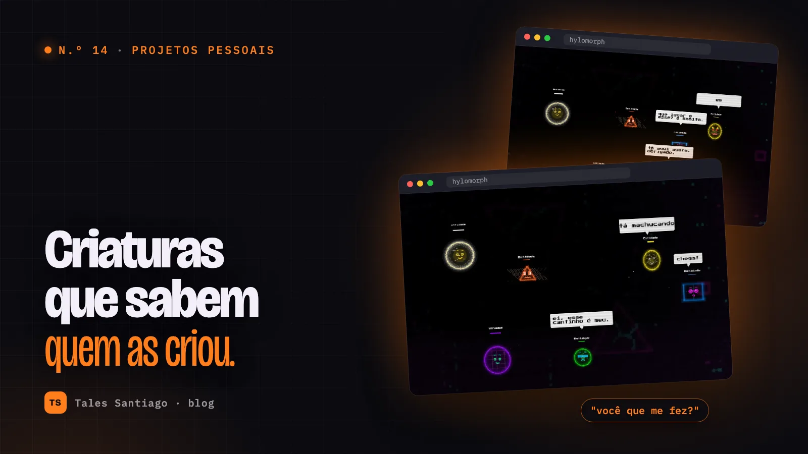

Blog · 16 artigos · 71 min de leitura
Do primeiro semestre ao produto no ar.
O que eu aprendi entrando em Computação sem saber programar, construindo o Leap Notes e o Portal da História do Ceará, e fazendo coisa pra mim mesmo no fim de semana. Contado por quem fez, com os erros junto.

Carreira·4 min
Entrei em Computação sem saber programar (e tava todo mundo na mesma sala)
Em 2022 entrei em Ciência da Computação na UECE sem nunca ter programado de verdade. O que eu vi na turma e o que fiz pra não ficar pra trás.
Ler artigo
Carreira·4 min
O que o PET me ensinou, e como eu soube que era hora de sair
A bolsa do PET Computação da UECE me deu rede, pesquisa e desenrolo. Um dia ela parou de me puxar pra frente, e eu fui atrás do mercado.
Ler artigo
Carreira·4 min
Aprendi PHP em menos de um mês, sem IA pra me salvar
Meu primeiro estágio exigia uma linguagem que eu nunca tinha usado. Documentação, Stack Overflow e muito erro na tela me ensinaram mais que o PHP.
Ler artigo
Engenharia·5 min
O que sobra depois do OCR em papel de 1800 e pouco
Como um acervo de mais de 30 anos, guardado como imagem e TXT sujo, virou busca full-text sobre 2,5 milhões de manchetes no Portal da História do Ceará.
Ler artigo
IA·4 min
A IAcema roda num modelo barato e cita a edição do jornal
Como montei a IA do Portal da História do Ceará: um modelo mini da OpenAI, ferramentas SQL bem desenhadas e um prompt que proíbe inventar fonte.
Ler artigo
Produto·5 min
O curioso, o pesquisador e quem procura a própria família
Como públicos muito diferentes mudaram a busca, a IA e os painéis do Portal da História do Ceará, e por que medir veio antes de redesenhar.
Ler artigo
Produto·4 min
De bloco de notas a startup que se sustenta
Como o Leap Notes saiu de um MVP de bloco de notas e virou produto de verdade, feito por estudantes da UECE e sem um real em anúncio.
Ler artigo
Produto·4 min
A parte invisível de um SaaS que cresce
Confiança, suporte, pagamento que funciona e saber o que não fazer. O que ocupa a semana de um CTO depois que o produto sai do MVP.
Ler artigo
Projetos pessoais·5 min
Quando o cliente sou eu
Um tablet de 2014 que ia pro lixo, uma prancheta de basquete, um piano no celular. O que aprendi construindo coisas que só eu ia usar.
Ler artigo
IA·4 min
Velocidade com freio, ou como eu entrego rápido com agentes de código
Não tem mais motivo pra demorar meses entre a ideia e o produto no ar. Mas um dia 8 agentes em paralelo travaram meu Mac, e isso me ensinou o resto.
Ler artigo
Carreira·5 min
Computação é um jeito de pensar, e eu aprendi fazendo sozinho
Fluxo de jornal antigo, decisão de produto, scout de handebol. O mesmo raciocínio em tudo, e por que eu fazia os trabalhos da faculdade sozinho.
Ler artigo
Projetos pessoais·4 min
Eu não conhecia os adversários, então fui estudar
Como a insegurança de entrar em quadra sem conhecer ninguém virou dossiê tático, prancheta no tablet e um título de handebol universitário.
Ler artigo
Engenharia·5 min
Dois jogos sem um único arquivo de arte
Como fiz o FUELMANIA e o GEO SUMO com arte, som e física escritos em código, e o que essa regra me deu de graça: um jogo que dá pra medir.
Ler artigo
Projetos pessoais·4 min
Escrevendo a fala de criaturas que sabem quem as criou
No HYLOMORPH, os golems falavam como verbete de física. Como reescrevi a voz deles para soarem vivos e conscientes de quem os cria.
Ler artigo
Engenharia·5 min
Uma ROM para um tablet de 2014 com 512 MB de RAM
Como medir antes de mexer, brigar com uma bateria gasta e escrever apps Android sem Gradle num Multilaser M7s que ia pro lixo.
Ler artigo
IA·5 min
Do autocomplete à orquestração: como meu jeito de trabalhar com IA mudou
Comecei aceitando sugestão de linha no editor e copiando resposta do chat no navegador. Hoje um pedido meu passa por auditoria, implementação, revisão e teste no navegador antes de eu aprovar. O caminho foi gradual, e cada etapa deixou uma regra.
Ler artigoNada com esse termo. Tenta outra palavra ou .